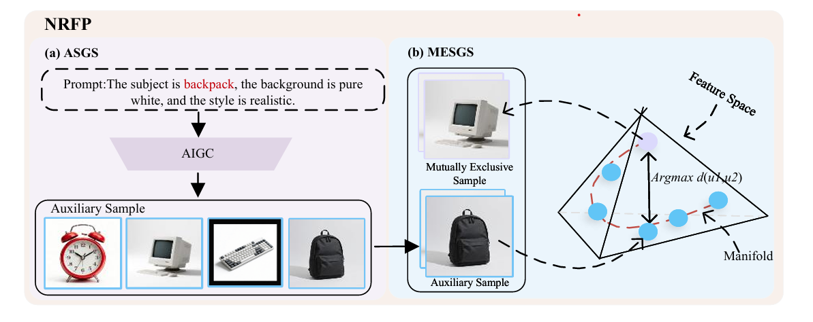
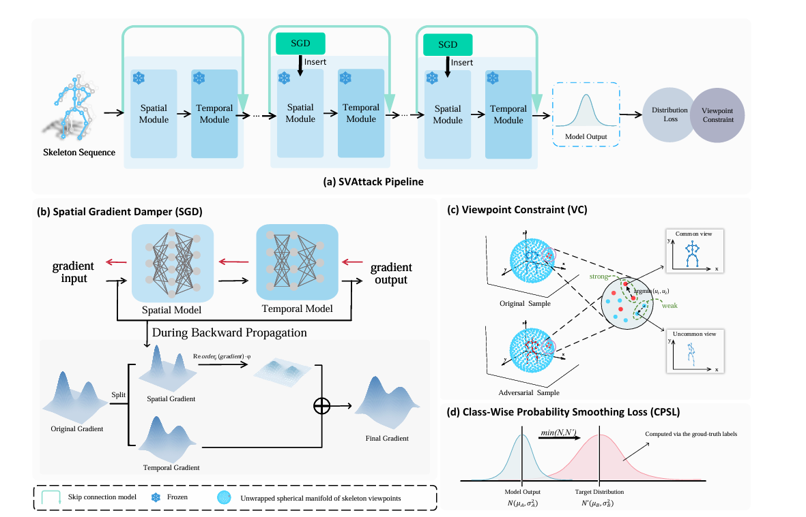

由吴志泽院长指导，依托于合肥大学人工智能与大数据学院。我们致力于推进前沿的深度学习与安全人工智能技术，旨在构建鲁棒、可信、泛化能力强的多模态 AI 系统。团队深耕对抗机器学习、域适应等核心领域，力求在真实的动态视觉场景中，解决模型面临的安全挑战与分布偏移难题。
加入我们
[2026.03] 团队最新研究工作 "NRFP: A Noise-Robust Feature Plugin for Source-Free Domain Adaptation" 正式被计算机视觉顶级会议 CVPR 2026 (CCF-A类) 录用。该研究聚焦无源域适应（SFDA）中“数据增强诱发噪声”的痛点，创新性地提出了一种即插即用的噪声鲁棒特征插件。通过引入双效机制（AIGC 纯净先验 ASGS 与特征级对抗互斥 MESGS），成功强制模型剥离表面干扰、提取内在语义，在多项主流基准测试中全面刷新了 SOTA 性能。

[2026.02] 团队在安全人工智能方向取得最新进展，完成研究论文 "Spatial Viewpoint Shift Attack on Graph Convolutional Skeleton Action Recognition"（目前正在审稿中）。该研究深入探讨了限制基于骨架模型对抗迁移性的架构归纳偏差问题。团队提出了一种空间梯度阻尼器与基于视点的约束机制，在保持视觉上合理的骨骼运动的同时，显著增强了对抗样本在不同 GCN 架构间的可迁移性。相关代码已开源。
专注模型在面对对抗样本时的脆弱性。研究黑盒场景下的对抗攻击与防御策略，当前重点为图像领域或骨骼动作识别场景下的安全性评估。
提升模型在未知领域和动态环境中的自适应能力。探索跨域数据下的特征对齐，以及应对分布偏移的鲁棒性挑战。
Zhize Wu, Yue Ding, Long Wan, et al. Pattern Recognition, 2025, 159: 111106. SCI Q1 CAAI-A
Zhize Wu, Pengpeng Sun, Xin Chen, et al. IEEE Transactions on Image Processing, 2024, 33: 4391-4403. CCF-A SCI Q1
Thomas Weise, Zhize Wu, Xinlu Li, et al. IEEE Transactions on Evolutionary Computation, 2023, 27(4): 980-992. CAAI-A SCI Q1
Zhize Wu, Jian Xu, Yan Wang, et al. Information Fusion, 2022, 80: 23-43. SCI Q1 CAAI-A
Zhize Wu, Huanyi Li, Xiaofeng Wang, et al. Tsinghua Science and Technology, 2022, 27(5): 793-803. SCI Q1
Zhize Wu, Chang Zou, Yan Wang, et al. Information Science, 2021, 572: 404-423. SCI Q1
Zhize Wu, Xiaofeng Wang, Le Zou, et al. Applied Soft Computing, 2021, 114(Part A): 107885. SCI Q1
Zhize Wu, Shouhong Wan, Xiaofeng Wang, et al. Applied Soft Computing, 2020, 89: 106132. SCI Q1
Zhize Wu, Shouhong Wan, Li Yan, et al. Journal of Computers, 2018, 29(4): 82-95. EI
Thomas Weise, Zhize Wu. GECCO Companion, 2023: 1891-1899. EI CCF Recommended
教授 (Professor) | 人工智能与大数据学院 副院长
安徽省青年拔尖人才，安徽省优秀青年研究生导师。研究方向主要集中在安全人工智能、深度学习驱动的视频与图像处理、多模态感知计算及算法优化等领域。
教授 (Professor)
目前担任安徽省信息标准化技术委员会、数字安徽专家委员会、安徽省数字化发展标准化技术委员会、安徽省公安厅安全技术防范领域、安徽省应急管理厅科技装备与信息化专家组、安徽省气象局防雷与接地、安徽省安全技术防范协会等行业协会专家委员，主要从事计算机视觉与图像处理、安全技术防范、自动化控制等应用领域的研究。
团队深耕于计算机视觉与 AI 安全领域，致力于推进对抗攻击与防御、域适应等核心课题。